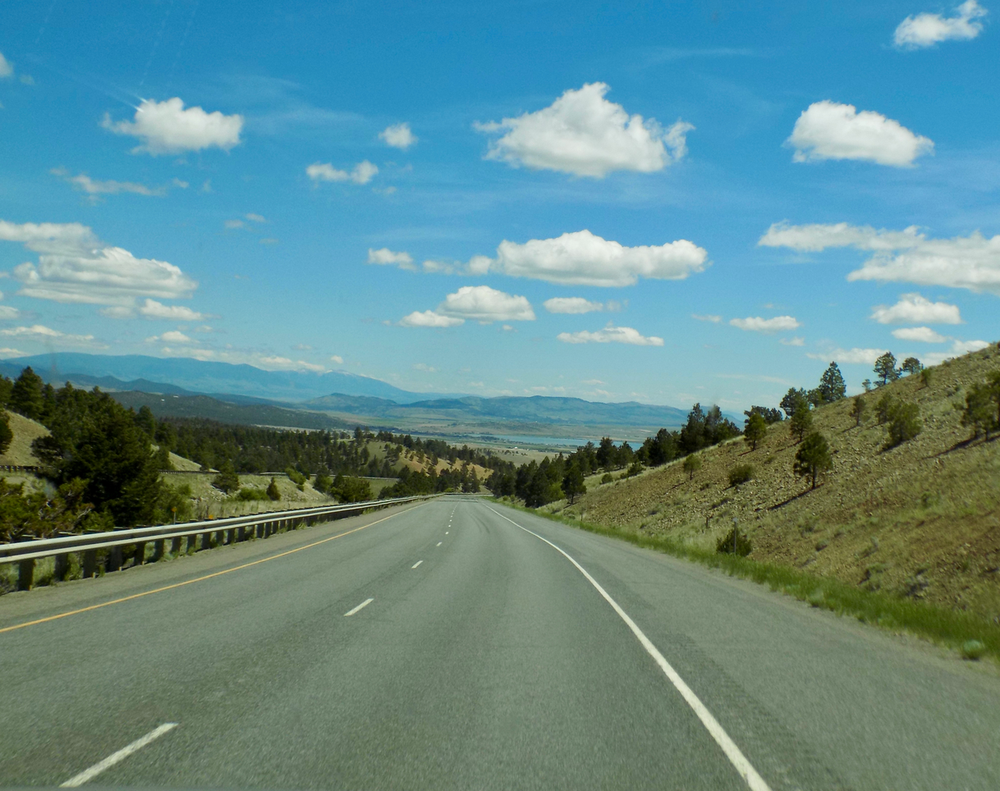

Even though I've been in the technology industry for the last fifteen years, I feel like I've only lived along it's edges. It's funny how friends react when I share with them that I want to go deeper & have a passion for learning to code and web development. Their initial shock is comical and so far, 100% of the time, is linked to my age! It may be hard for some to understand, but I only ever feel successful in life when I'm learning something new. And I am just beginning the next journey in my life - my "road to code", better grab my coffee for this trip!
My passion in life starts with faith & family
I especially enjoy the weekends, breaking from work, relaxing with my family. We recently started a family initiative to feed the homeless. We call it PB&J Day. We get together super early one Saturday a month, make more than a hundred peanut butter & jelly sandwiches and take them to a homeless shelter we help support in Fort Worth, TX.
"The road to success is always under construction"Steve Maraboli
Learning to code withUdacity,I'm packing my bags with essentials. Udacity has opened my mind to so many available tools. Among the sites they've introduced me to, some of my favorits are W3schools.com, Google "dev tools" and GitHub.

Don't forget to fill up :)
Along this journey to code, I'll be sure to have plenty of my favorite comfort food - COFFEE! Some say it's the drink of the Gods. I'm not sure if that's true, but it certainly is the drink of Sandi! Cappuccino, frappuccino, espresso, and especially plain coffee, I'll be enjoying them all while learning to code and make beautiful web pages.
Visit my bio page